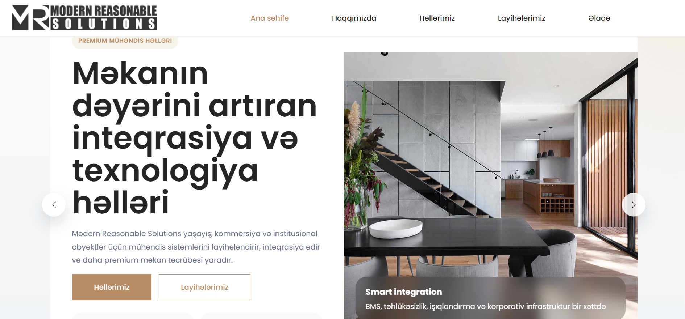
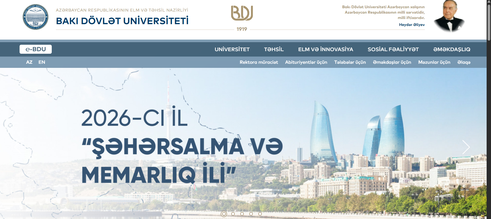
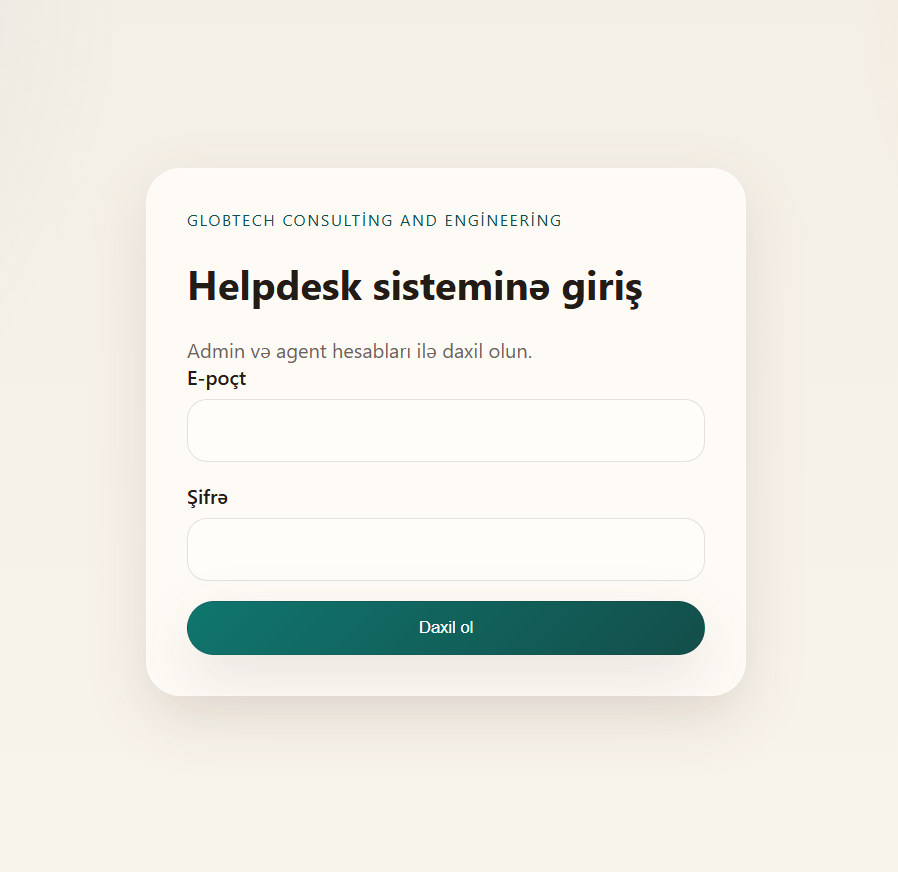
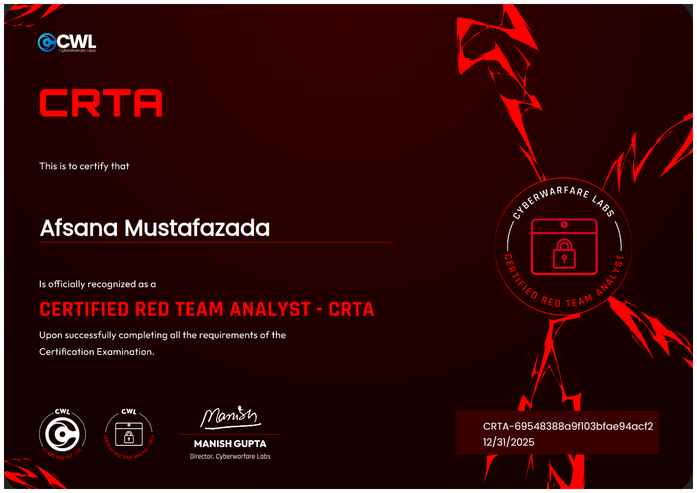
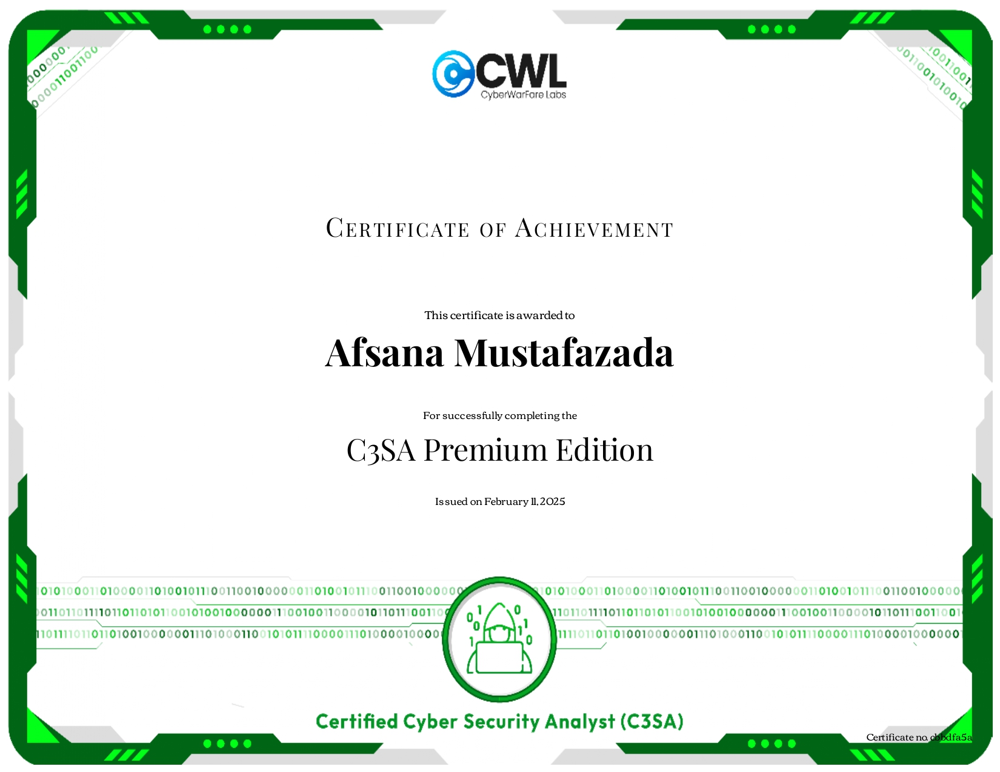
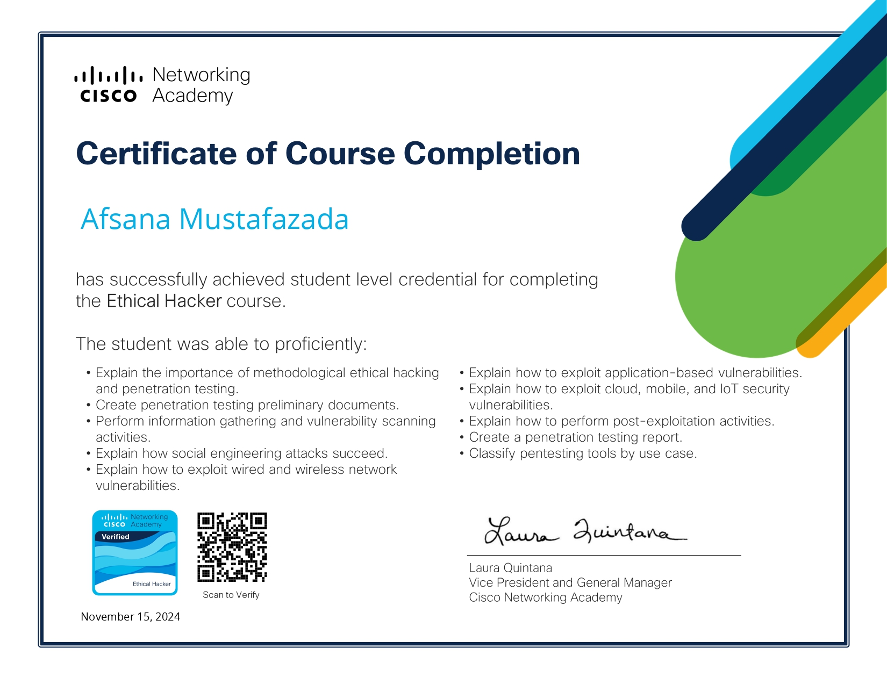
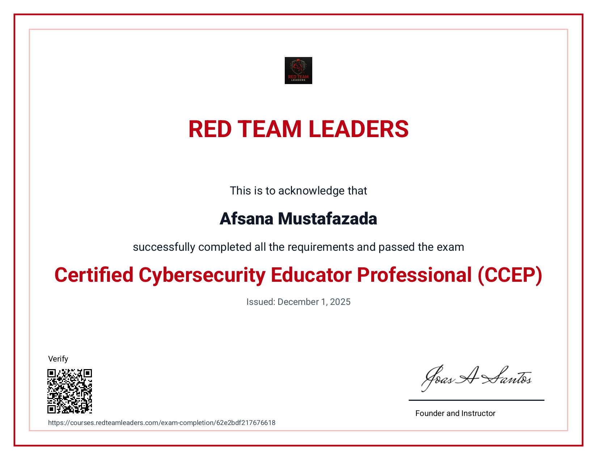

2019 - 2023
Bakı Dövlət Universiteti
Riyaziyyat ixtisası üzrə bakalavr təhsilimi tamamlamışam. Bu mərhələ analitik düşüncə, problem həlli və sistemli yanaşma bacarıqlarımın formalaşmasında mühüm rol oynayıb.

AI • Cybersecurity • IT Operations
Süni intellekt, kibertəhlükəsizlik və sistem inzibatçılığı sahələrində ixtisaslaşmış mütəxəssisəm. Şəbəkə infrastrukturu, helpdesk idarəetməsi, təhlükəsizlik analizi və real iş mühitində texniki komandaların koordinasiyası üzrə praktiki təcrübəyə sahibəm. Məqsədim təhlükəsiz, dayanıqlı və ağıllı texnoloji həllər qurmaqdır.
Texniki dərinliklə strateji baxışı birləşdirərək təşkilatlar üçün təhlükəsiz və effektiv IT mühiti qurmağa fokuslanıram.
.jpeg)
Süni intellekt və kibertəhlükəsizlik istiqamətində ixtisaslaşmış mütəxəssis kimi şəbəkə infrastrukturu, sistem inzibatçılığı, helpdesk idarəetməsi və təhlükəsizlik təhlili sahələrində geniş praktik təcrübəyə sahibəm. Hazırda AI əsaslı təhlükə aşkarlama yanaşmaları, fişinq və sosial mühəndislik hücumlarının analizi üzrə tədqiqat fəaliyyətimi davam etdirirəm. Paralel olaraq komandaların koordinasiyası, proseslərin optimallaşdırılması və kritik sistemlərin dayanıqlılığının təmin edilməsi istiqamətində real iş mühitində aktiv rol alıram.
Akademik baza, ixtisaslaşmış texniki təlimlər və real iş təcrübəsi üzərində qurulmuş inkişaf yolum.
Riyaziyyat ixtisası üzrə bakalavr təhsilimi tamamlamışam. Bu mərhələ analitik düşüncə, problem həlli və sistemli yanaşma bacarıqlarımın formalaşmasında mühüm rol oynayıb.
Magistratura səviyyəsində süni intellekt, maşın öyrənməsi, məlumat analizi və ağıllı sistemlərin qurulması istiqamətində biliklərimi dərinləşdirirəm.
Linux sistemlərinin idarə olunması, server konfiqurasiyası və sistem təhlükəsizliyi üzrə praktik bacarıqlar əldə etmişəm.
Penetrasiya testləri, fişinq ssenariləri və real hücum simulyasiyaları üzərində çalışaraq hücum və müdafiə mexanizmlərini praktik şəkildə öyrənmişəm.
Layihə əsaslı işləmə, proqramlaşdırma məntiqi və texniki yaradıcılıq bacarıqlarımı inkişaf etdirmişəm.
Freelance əsasda tədqiqatçı kimi informasiya texnologiyaları, süni intellekt və tətbiqi araşdırmalar istiqamətində yeni layihələr üzərində işləməyə başlamışam.
Kibertəhlükəsizlik, IT xidmətləri və rəqəmsal həllər sahəsində platformanın strategiyasına, xidmət strukturuna və inkişaf istiqamətlərinə rəhbərlik edirəm.
Şəbəkə infrastrukturu, təhlükəsizlik sistemləri, helpdesk prosesləri və komanda idarəetməsi üzrə rəhbərlik edirəm.
Fişinq və sosial mühəndislik hücumları üzrə tətbiqi tədqiqatlar aparır, AI əsaslı təhlükə aşkarlama metodları üzərində işləyirəm.
Serverlərin idarə olunması, istifadəçi səlahiyyətlərinin tənzimlənməsi və daxili IT dəstəyi istiqamətində fəaliyyət göstərmişəm.
Korporativ tərəfdaşlıqların qurulması, strateji əməkdaşlıqların inkişafı və təşkilati koordinasiya proseslərinə töhfə verirəm.
İnformasiya təhlükəsizliyi ixtisası üçün tədris vəsaitlərinin hazırlanmasına dəstək göstərmişəm.
Həm texniki, həm də idarəetmə yönümlü bacarıqlarımı real layihələr və gündəlik iş təcrübəsi ilə formalaşdırmışam.
İşlədiyim və dəstək verdiyim layihələrdən seçilmiş nümunələr.




Təhlükəsizlik, AI və texniki inkişaf sahələrində əldə etdiyim sertifikat və nailiyyətlər.




Əməkdaşlıq, layihə və ya peşəkar əlaqə üçün mənə yazın.